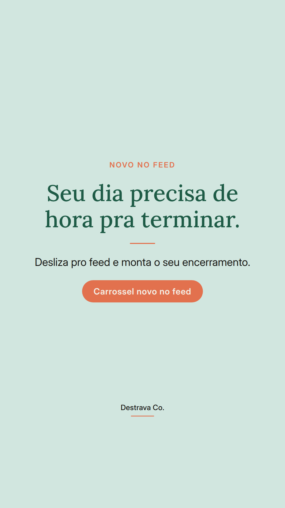
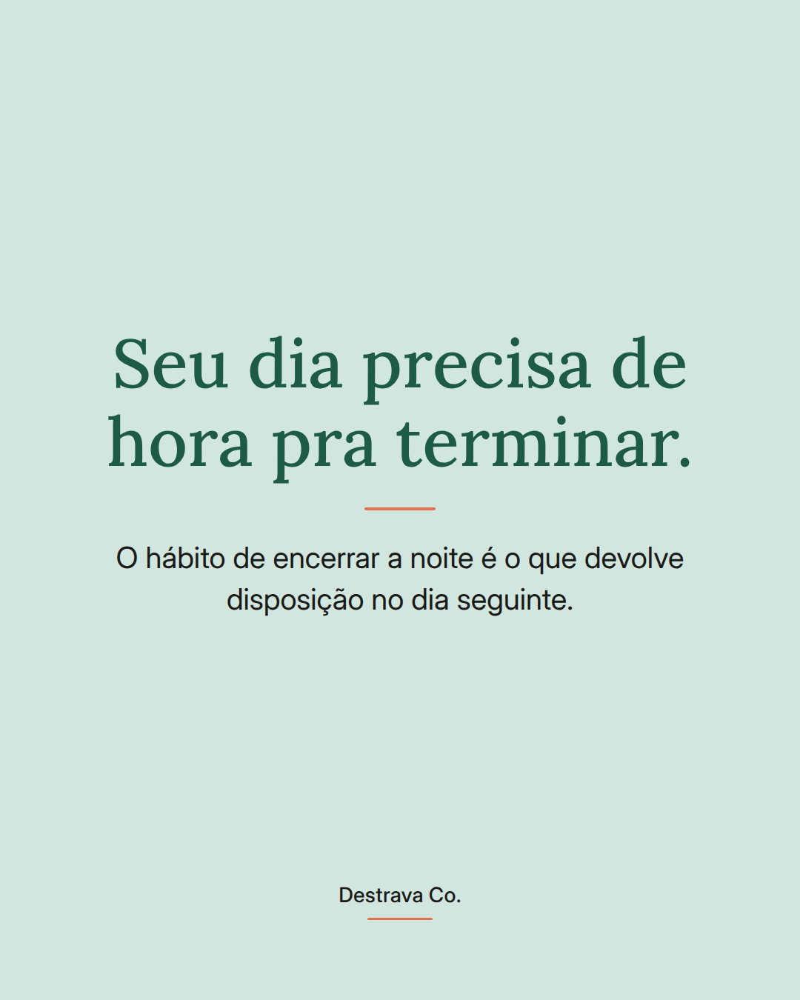
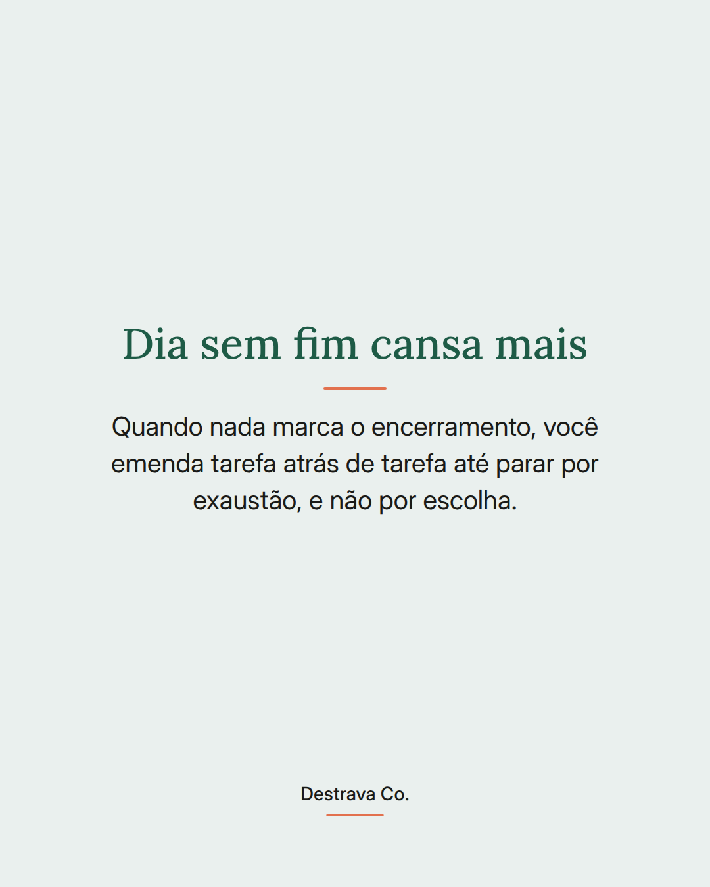
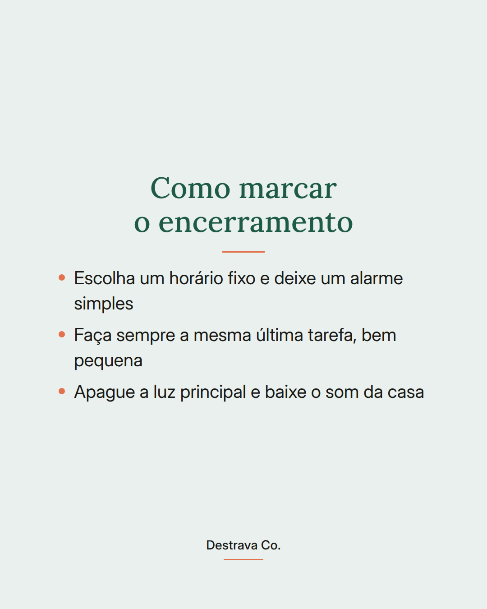
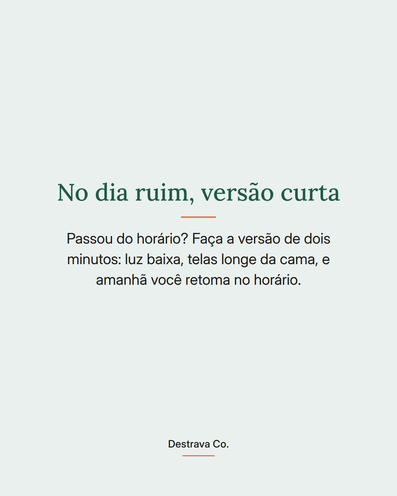
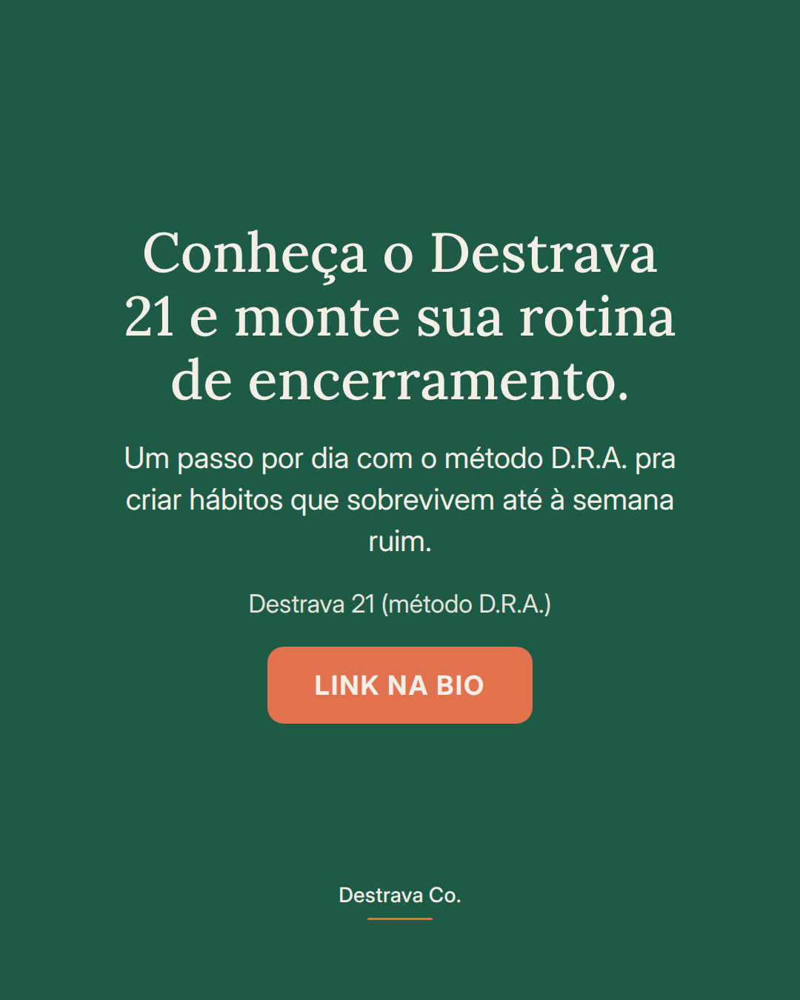

Energia no dia seguinte começa com uma hora pra encerrar o dia de hoje.
A gente combina horário pra tudo, menos pra parar. Aí o dia vai esticando, a noite vira o único espaço livre que sobrou e você acorda com a sensação de que não descansou de verdade.
Encerrar é um hábito, igual a qualquer outro. Escolhe um horário, define uma última tarefa pequena e sempre igual, abaixa a luz. Seu corpo começa a entender que aquele sinal significa fim do expediente da casa.
E nos dias em que der errado, não precisa abandonar: faz a versão de dois minutos e retoma amanhã. Constância é isso, voltar rápido.
Salva pra lembrar hoje à noite e manda pra uma amiga que vive apagando a luz tarde. Se quiser montar essa rotina com apoio, o Destrava 21 te guia um passo por dia.